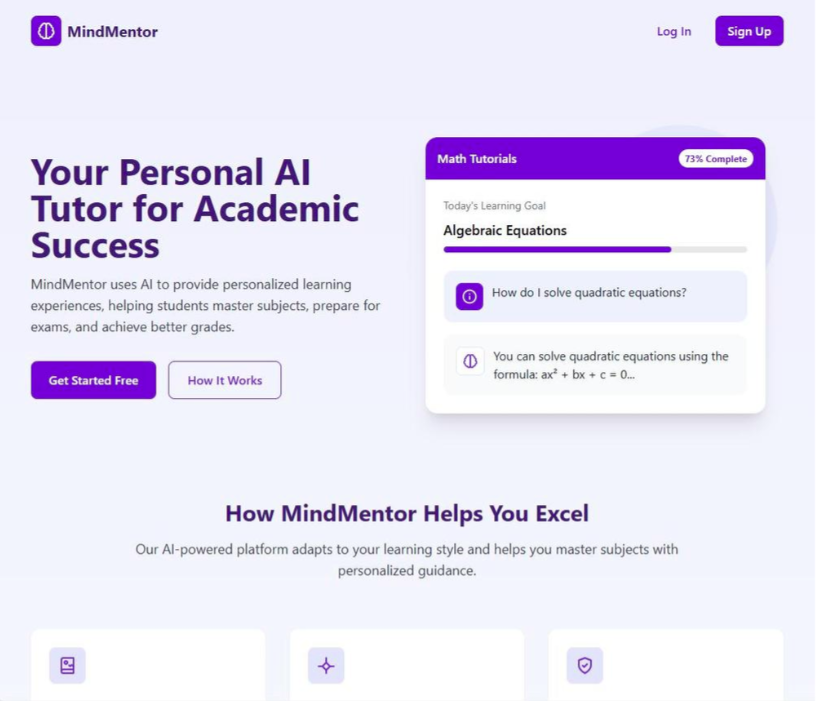
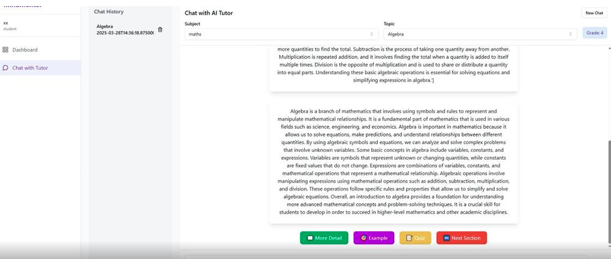
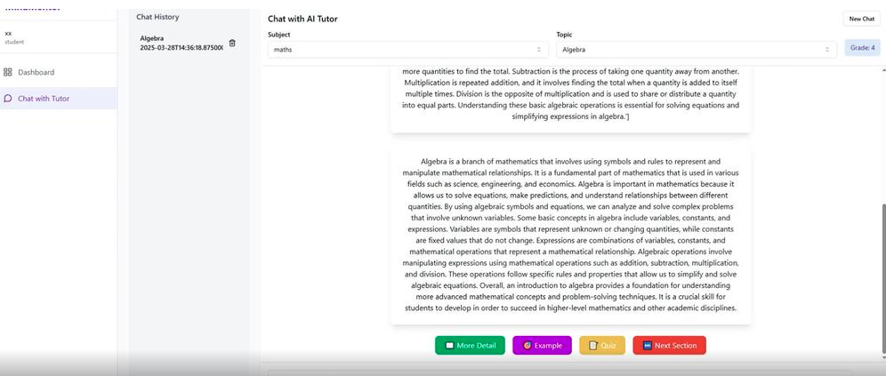

Mind-Mentor-AI

 

MindMentorは、AIによる個別指導を提供する教育支援プラットフォームです。 生徒が各教科のAIチューターと会話しながら学習を進められるように設計されており、 パーソナライズされた理解のサポートと復習が可能です。
本アプリケーションはReact（フロントエンド）とFastAPI（バックエンド）で構成され、 OpenAIのAssistants APIを活用して文脈に沿った応答を提供します。 また、ユーザーデータとチャット履歴はFirebaseにて管理されています。
📘 プロジェクト概要
MindMentorは、学習者にとってスケーラブルかつアクセス可能な教育体験を提供するために開発された、 AI搭載の教育プラットフォームです。
🎯 主な機能
- 生徒は登録された教科の中から選択し、AIチューターと対話を開始できます。
- スレッド形式での会話により、自然で継続的な学習が可能です。
- 会話の文脈を保持し、フォローアップの質問にも対応できます。
- チャット履歴は教科・日付ごとに整理され、復習に役立ちます。
- 学習進捗が可視化され、自己管理型の学習が促進されます。
⚙️ 技術スタック
- フロントエンド：React
- バックエンド：FastAPI
- AIエンジン：OpenAI Assistants API
- データベース／ストレージ：Firebase
🧪 現在の技術的課題と検討事項
- 資料ベースの質問応答：アップロードされたドキュメントに基づき、明確かつ簡潔な応答を行います。
- 会話の文脈維持：セッション内で会話の流れを維持します。
- 高速応答：原則として1〜3秒以内に応答。
- 学習内容のインデックス作成：資料の目次をもとにインデックスを作成。
- 学習履歴の整理：過去の会話は教科・日付別に保存。
- 文脈に基づく回答：教科・トピックに応じた意味のある応答。
🎓 ユースケース
- 生徒が学校から帰宅し、「今日習ったトピック」を入力するとAIチューターが対応。
- 学習内容の復習サポート
- 短いクイズ形式で理解度をチェック
- 結果に基づき、フィードバックを提供（理解できている点、苦手な点の明示）
- AIチューターは実際の先生のように学習を支援、理解度向上と自主的な学びをサポート